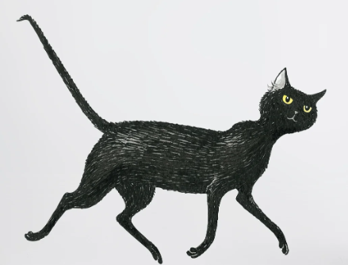

🏠 Home
Angle & Shape Detective
Geometry Academy
🔥
0
Streak
⭐
0
Stars
🔊 Sound On
🌓 Theme
📐 Angle Ranger
🧊 Shape Detective
🦋 Symmetry Watch
🌱 Year 3
Core concepts
🗺️ Year 4
Developing skills
🏆 Year 5
Harder challenges
🌈 Year 6
Ultimate mastery

Loading mystery... 🐾
💡 Hint
🎲 Next Challenge
_
 🏠 Home
🏠 Home